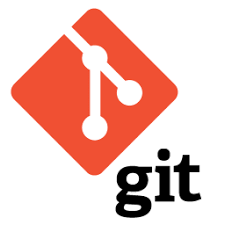
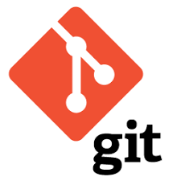

A Propos
Après plus de 10ans d'expériences de gestion commerciale et d'encadrement d'équipes dans la grande distribution, j'ai pris la décision, suite à une forte réflexion et un bilan de compétences, de me reconvertir dans le développement web.
Ma Recherche
Afin de compléter ma formation, je souhaîte apporter mes connaissances au service d'une entreprise en tant qure développeuse web back-end junior lors d'un stage qui débutera au mois d'Août. A ce titre, je mettrais à profit mes capacités en matière de communication telle que mon aisance à travailler en équipe . De plus, j'y démontrerais également mon ouverture d'esprit à travers ma curiosité, mon interêt pour le domaine ainsi que mon atout d'adaptation tant à l'équipe de travail qu'aux méthodes et objectifs demandés. Enfin, j'accomplirais avec perséverance et conscienseusement, les missions qui me seront confiées.
Mes Compétences Techniques
 



Projets
Projet réalisé en formation: Site web du restaurant La p'tite Ardoise Rélisé en 3 jours en équipe de 3 Wireframe, git/github, HTML et CSS

Hackathon réalisé en formation: Application de rencontre Star Love Rélisé en 24H en équipe de 2 Wireframe, git/github, HTML, CSS, Spring-boot, Thymeleaf, Jdbc et Mysql
Projet réalisé en formation: Site web de création de liste de cadeaux Rélisé en 15 jours en équipe de 4 Wireframe,Backlog Produit, Burndown chart, git/github, HTML, CSS, SCRUM, Spring-boot, Thymeleaf, Jdbc et Mysql

Projet en cours de réalisation
Expériences
LIDL
Adjointe Manager 2014-2018
Progression du CA de 20%
Amélioration des résultats d'inventaire (en moyenne -0,35 -> objectif -0,50)
Amélioration de la productivité annuelle (360)
Remplacement Responsable Magasin 2012-2014
Amélioration des résultats d'inventaire (en moyenne -0,50)
Amélioration de la productivité annuelle (300)
Changement de gamme et passage au pain
Responsable de Caisse 2009-2012
Caissière 2008-2009
Auchan
Employée Libre Service 2007-2008
Saison Jouet et Blanc
Ticoon
Vendeuse en restauration rapide 2005-2007
Travail saisonnier pendant toutes les vacances scolaires
Dès ma majorité, j'ai été embauchée en contrat étudiant
Formations
Wild Code School
Formation développement web Java
Du 2 mars 2020 au 31 juillet 2020
Réalisation de 2 projets école et d'un projet client
Lycée St Félix
Baccalauréat STG(Sciences Technologies de la Gestion)
Contact
chevreauswann@outlook.fr
06 35 46 82 87
Nantes